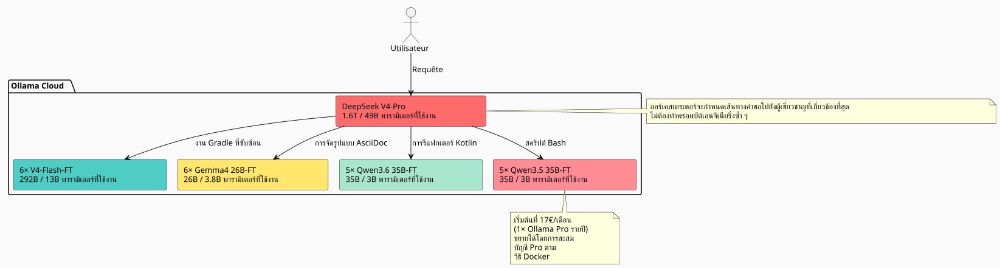

27× ถึง 45× มีประสิทธิภาพมากกว่า Claude และ GPT: กองทัพผู้เชี่ยวชาญ AI ที่ผ่านการ fine-tune จำนวน 23 ราย บดขยี้ตลาดได้อย่างไร
เผยแพร่เมื่อ 11 May 2026
เมื่อใช้ LLM สำหรับการพัฒนาซอฟต์แวร์ในชีวิตประจำวัน เราก็ลงเอยด้วยการชนกำแพงเดิมเสมอ: โมเดลไม่รู้จักโค้ดเบส*ของคุณ* มันไม่รู้ว่าคุณใช้แพตเทิร์นแบบใดของhttps://fr.wikipedia.org/wiki/Graphe_orient%C3%A9_acyclique[DAG], เช่นเดียวกับอนุสัญญา Gradle เช่นเดียวกับการแบ่งชั้นทางญาณวิทยาในของคุณhttps://fr.wikipedia.org/wiki/AsciiDoc[.adoc]. จากนั้นเราก็ป้อนบริบทให้มัน ทำซ้ำ แก้ไข และวนซ้ำ และเวลา — และเงิน — ก็ผ่านไป
ฉันจึงถามตรง ๆ ว่า: กลุ่มโมเดลที่ผ่านการ fine-tune บนเวิร์กสเปซของฉัน ซึ่งสามารถพ่นโค้ดออกมา*ในสไตล์ของฉัน*โดยไม่ต้องอธิบายให้พวกมันฟังทุกครั้ง จะมีค่าใช้จ่ายเท่าไร? และที่สำคัญที่สุด: วิธีนี้เปรียบเทียบกับโซลูชันแบบกรรมสิทธิ์แบบดั้งเดิม — Claude, GPT, Gemini, Grok — อย่างไร?
คำตอบทำให้ฉันประหลาดใจ น้อยกว่าที่ฉันจินตนาการไว้มาก และอัตราส่วนต้นทุนต่อประสิทธิภาพเมื่อเทียบกับยักษ์ใหญ่ในอุตสาหกรรมนั้นดีจนน่าตกใจ นี่คือรายละเอียดทั้งหมด
ปัญหา: ทำไมต้อง fine-tune ไม่ใช่ RAG?
RAG นั้นดี knowledge graph ของฉัน และ การแบ่งส่วนทางญาณวิทยาของฉัน ทำงานได้ แต่ RAG มีข้อบกพร่องพื้นฐาน: ในแต่ละคำขอ คุณต้องป้อนบริบทที่เกี่ยวข้องกลับเข้าไปใหม่ พรอมต์ของคุณยาวขึ้น ความหน่วงพุ่งสูง และโมเดลไม่เคย*ซึมซับ*แพตเทิร์นของคุณเป็นส่วนหนึ่งภายในเลย — มันอ่านสิ่งเหล่านั้นทุกครั้งเหมือนเอกสารภายนอก
ส่วนไฟน์ทูนนั้น มันคือความจำของกล้ามเนื้อ โมเดล รู้ ว่าคุณกำลังเขียน`build.gradle.kts`ด้วยงานที่บันทึกไว้ผ่าน`tasks.register`, ว่า…ของคุณ`AGENTS.adoc`ปฏิบัติตามไวยากรณ์มาตรฐานว่าเวิร์กสเปซของคุณถูกจัดโครงสร้างเป็นโบโร เขาไม่จำเป็นต้องได้รับการเตือน
|
การ fine-tune ไม่ใช่การแทนที่ RAG แต่เป็นชั้นเสริม RAG ยังคงเหมาะสมกับข้อมูลที่เปลี่ยนแปลงบ่อย (logs, tickets, commits ล่าสุด) ส่วน fine-tune ใช้สำหรับความรู้ เชิงโครงสร้าง และ เชิงสไตล์ ในระยะยาว |
แนวคิด: ฝูงผู้เชี่ยวชาญ ไม่ใช่โมเดลเดียว
โมเดลเดียวที่ผ่านการไฟน์จูนบนเวิร์กสเปซทั้งหมดของฉันก็ถือว่าดีอยู่แล้ว แต่มันยังไม่เหมาะสมที่สุด เวิร์กสเปซของฉันครอบคลุมโดเมนที่แตกต่างกันมาก:
-
ปลั๊กอิน Gradle (Kotlin, ปลั๊กอินแบบคอนเวนชัน, บิลด์แบบคอมโพสิต)
-
เอนจิน DAG (Kotlin, การวางแผน, การดำเนินการ)
-
เอเจนต์ LLM (Python, LangChain4j, RAG)
-
เอกสารสถาปัตยกรรม (AsciiDoc, การกำกับดูแล)
-
โครงสร้างพื้นฐาน/DevOps (Docker, GitHub Actions, CI/CD)
โมเดลเดียวควรจะดีได้ทุกที่ แต่ยอดเยี่ยมไม่มีที่ไหนเลย ทางออกคือ? หนึ่งกลุ่มโมเดลเฉพาะทาง, โดยมีออร์เคสเตรเตอร์ที่ส่งแต่ละคำขอไปยังผู้เชี่ยวชาญที่เหมาะสม

กองยานพาหนะทั้งหมด:1 ผู้ประสานงาน + 22 ผู้เชี่ยวชาญ = 23 โมเดลแล้วค่าใช้จ่ายในการอนุมานรายเดือนล่ะ?17€/เดือนในรูปแบบการสมัครสมาชิก Ollama Pro รายปี — ขยายได้โดยการรวมบัญชีเมื่อเกินโควตา ดังที่แสดงไว้ใน วิธี Docker หลายบัญชีของฉัน เริ่มต้นที่ 17€ และเพิ่ม 20€ ต่อระดับตามความต้องการจริง ไม่มีการสิ้นเปลือง
โค้ดเบสภายใต้แว่นขยาย: 7,900 ไฟล์, 144,000 บรรทัด
ก่อนประเมินค่าใช้จ่ายในการเทรน ต้องรู้ก่อนว่าจะเทรนอะไร ฉันได้ตรวจสอบเวิร์กสเปซของฉันโดยตัดทุกสิ่งที่ Git ละเว้นออกอย่างเคร่งครัด:
----
build/ out/ node_modules/ runtimes/ .gradle/ dist/
target/ venv/ __pycache__/ .cache/ .tox/
----
นี่คือผลลัพธ์สำหรับไฟล์ที่ถูกติดตามเท่านั้น:
[cols="2,2"]
|===
|เมตริก |มูลค่า
|ไฟล์ต้นทางที่ถูกติดตาม |**7 896** |จำนวนบรรทัดโค้ด (LOC) |**๑๔๓ ๘๐๕** |รีโพซิทอรี Git |**๒๖** |ภาษาหลัก |Kotlin (1 903), AsciiDoc (2 765), Python (5 029)
|===
[IMPORTANT]
====
ไฟล์ Python 5 000+ ไฟล์เหล่านี้รวมถึง`runtimes/`โน้ตบุ๊กและสคริปต์ยูทิลิตี้ ส่วนแกนหลักของแอปพลิเคชัน (ปลั๊กอิน Gradle, เอนจิน DAG, เอเจนต์) โดยหลักแล้วเขียนด้วย Kotlin และ AsciiDoc
====
จากมวลนี้ ฉันประเมินว่าสามารถสร้างชุดข้อมูลสังเคราะห์ของ**ประมาณ 170 ล้านโทเคน**ผ่าน LLM ผู้สอน (ดิสทิลเลชันโค้ดเบสเป็นคู่คำสั่ง/คำตอบ)
=== รายละเอียดของชุดข้อมูลตามประเภทผู้เชี่ยวชาญ
[source,text]
----
Dataset maître (généraliste V4-Flash) : 50M tokens
Expert Gradle/Build : 15M tokens
Expert Kotlin/DAG : 15M tokens
Expert AsciiDoc/Gouvernance: 15M tokens
Expert Agent/LLM/Python : 15M tokens
Expert Infra/CI-CD : 15M tokens
Micro-experts Qwen/Gemma : ~5M tokens chacun
----
== การเลือกโมเดล: 100% MoE ไม่มีแบบ dense
นี่คือจุดที่สถาปัตยกรรมมีประสิทธิภาพอย่างแท้จริง
โมเดล *dense* เปิดใช้งานน้ำหนักทั้งหมดของตนในทุกโทเคน โมเดล *MoE* (Mixture of Experts) เปิดใช้งานเพียงเศษเสี้ยวของพารามิเตอร์เท่านั้น ต้นทุนการอินเฟอเรนซ์ — และการ fine-tuning — เป็นสัดส่วนกับพารามิเตอร์**เปิดใช้งานแล้ว**, ไม่ใช่ที่พารามิเตอร์**จัดเก็บไว้**.
มาดูกันว่าตลาดเสนออะไรบ้างในรูปแบบ MoE บน Ollama Cloud ในวันนี้:
[cols="3,2,2,1,3"]
|===
|โมเดล |จำนวนพารามิเตอร์ทั้งหมด |เปิดใช้งานแล้ว |การเปิดใช้งาน |Ollama Cloud
|DeepSeek V4-Pro |1.6T |49B |3.1% |✅ พื้นเมือง |DeepSeek V4-Flash |292B |13B |4.5% |✅ เจ้าของภาษา |Gemma 4 26B-A4B |26B |3.8B |14.6% |✅ เจ้าของภาษา |Qwen3.6-35B-A3B |35B |3B |8.6% |❌ (ยังไม่ได้ผสานรวม) |Qwen3.5-35B-A3B |35B |3B |8.6% |✅ เจ้าของภาษา
|❌ Qwen3.5-27B |27B |27B |100% หนาแน่น |ถูกกำจัด |❌ Qwen3.5-4B/9B |4B/9B |4B/9B |100% แน่น |ถูกกำจัด |❌ Gemma 4 31B |31B |31B |หนาแน่น 100% |ถูกกำจัด
|🧪 Gemma 4 E2B/E4B |5B/8B |5B/8B |หนาแน่น 100% |ไปป์ไลน์การตรวจสอบ
|===
[CAUTION]
====
อัตราการเปิดใช้งานคือเกณฑ์ที่ใช้จำแนก Gemma 4 26B-A4B เปิดใช้งานเพียง 3.8B จากพารามิเตอร์ 26B ของมัน — น้อยกว่าแบบ dense 27B ถึง 7 เท่า โดยมีประสิทธิภาพของ coding agent ที่เทียบเคียงได้ (77.1% เทียบกับ 80% บน LiveCodeBench v6)
====
=== ทำไมฉันถึงเลิกใช้โมเดลแบบ dense
ข้อยกเว้น: Gemma 4 E2B และ E4B ทั้งสองโมเดลนี้อยู่ภายใต้ Apache 2.0 เหมาะอย่างยิ่งสำหรับการทดสอบและตรวจสอบไปป์ไลน์การเทรนด้วยต้นทุนต่ำ การรัน 2-3 ชั่วโมงบน E2B มีค่าใช้จ่ายน้อยกว่า $5 — หากชุดข้อมูลหรือไฮเปอร์พารามิเตอร์มีปัญหา เราจะรู้ได้ด้วยเงินเพียงไม่กี่ดอลลาร์ เมื่อไปป์ไลน์เข้าที่แล้ว พวกมันยังใช้กับงานจิ๋วมาก ๆ ได้ (การจัดรูปแบบใหม่แบบง่าย ๆ การจำแนกแบบไบนารี) แต่สำหรับโมเดลผู้เชี่ยวชาญในกลุ่มหลัก ผมยังคงเลือก MoE เหตุผลมีดังนี้:
.แต่ไม่เพียงเท่านั้น: Gemma 4 E2B/E4B ผู้เชี่ยวชาญด้านการทำให้ไม่ระบุตัวตนแบบละเอียด
[NOTE]
====
Google ออกแบบโมเดลเล็กเหล่านี้ให้สามารถแข่งขันได้ในการเรียกใช้เครื่องมือแบบเนทีฟ — พวกมันสามารถเรียกฟังก์ชัน จัดการ regex และค้นหารูปแบบได้ เมื่อผ่านการ fine-tune ด้วยตัวอย่างการทำให้ไม่ระบุตัวตน (อีเมล โทเค็น UUID พาธไฟล์) พวกมันจะกลายเป็น**เครื่องมือทำให้ชุดข้อมูลไม่ระบุตัวตน**เร็วสุด ๆ เราโยนบล็อกข้อความดิบให้พวกเขา, พวกเขาเรียก`sed`/`regex`ผ่าน tool call และส่งคืนบล็อกที่ทำความสะอาดแล้ว ค่าใช้จ่ายในการอนุมานนั้นน้อยมาก: เปิดใช้งาน 5B ซึ่งรันได้บน GPU ระดับเริ่มต้นเพียงตัวเดียว โมเดลเหล่านี้ไม่ใช่ผู้เชี่ยวชาญเฉพาะด้าน — พวกมันเป็น**คนงานฝีมือ**ในห่วงโซ่การผลิตของชุดข้อมูล
====
* VRAM สำหรับการฝึกของมัน (แม้ใน QLoRA) นั้นเป็นสัดส่วนกับ**27B ทั้งหมด**
* ระยะเวลาการฝึกของเขาเป็นสัดส่วนกับ**27B ที่เปิดใช้งาน**
มาเปรียบเทียบกับ Qwen3.6-35B-A3B (MoE) กัน:
[cols="3,2,2,2"]
|===
| |Qwen3.5-27B (แบบหนาแน่น) |Qwen3.6-35B-A3B (MoE) |อัตราส่วน
|VRAM QLoRA |~55 GB |~35 GB |1.6× |ชั่วโมง GPU (8M tok) |~12 ชั่วโมง |~4 ชม. |**3×** |ต้นทุนต่อการไฟน์ทูน |~$24 |~$8 |**3×** |SWE-bench Verified |75.0% |73.4% |เทียบได้
|===
MoE มีต้นทุนการฝึกน้อยกว่า 3 เท่า โดยได้ประสิทธิภาพ agent-coding ใกล้เคียงกันภายใน 5% เมื่อมีผู้เชี่ยวชาญ 22 ตัว ความแตกต่างคิดเป็นหลักพันยูโร
== ประมาณการการเทรน: 811 ชั่วโมง H100
ฉันได้แยกย่อยต้นทุนการเทรนโมเดลทีละโมเดล ด้วย QLoRA 4-bit โดยใช้ชุดข้อมูลที่อธิบายไว้ข้างต้น
=== ผู้เชี่ยวชาญขนาดเล็ก MoE แบบน้ำหนักเบา (เปิดใช้งาน 3-3.8B)
โมเดลเหล่านี้ต้องใช้ H100 1 ตัว (80 GB) ต่อการรัน หน่วยความจำ VRAM ของโมเดลใน Q4 อยู่ที่ประมาณ 13-18 GB ซึ่งเหลือเผื่อไว้มากสำหรับสถานะตัวปรับแต่ง LoRA และแอกติเวชัน
[cols="4,2,3,2"]
|===
|แบบจำลอง |จำนวนรัน |GPU-h/รอบ |รวม GPU-ชม.
|Gemma 4 26B-A4B-FT |6 |3.5 h |**21 น.** |Qwen3.6-35B-A3B-FT |5 |4.0 h |**20 น.** |Qwen3.5-35B-A3B-FT |5 |4.0 h |**20 น.** |*ยอดรวมย่อยไมโคร* | | |*61 h*
|===
=== Executives V4-Flash (13B ที่เปิดใช้งาน / 292B ที่จัดเก็บ)
DeepSeek V4-Flash เป็นกรณีพิเศษ แม้ว่าจะมีเพียง 13B เท่านั้นที่ถูกเปิดใช้งานต่อโทเค็น โมเดลแบบเต็มใน Q4 มีขนาด ~142 GB — expert ทั้งหมดต้องอยู่ใน VRAM ระหว่างการเทรน ดังนั้นจึงจำเป็นต้อง**3× H100**ต่อการรันเพื่อให้สบาย
[cols="4,2,3,3,2"]
|===
|แบบจำลอง |ชุดข้อมูล |จีพียู |ชั่วโมง |GPU-h ทั้งหมด
|V4-Flash-Base แบบอเนกประสงค์ |50 ล้านโทเคน |3× H100 |50 h |**150 ชั่วโมง** |ผู้เชี่ยวชาญ V4-Flash ×5 |15 ล้านโทเคน |3× H100 |40 h |**600 ชั่วโมง** |*ยอดรวมย่อยผู้บริหาร* | | | |*750 h*
|===
[cols="3,2,1"]
|===
|**ยอดรวม** | |**811 H100-h**
|===
[NOTE]
====
เพื่อเป็นการเปรียบเทียบ การ full fine-tune ของ V4-Flash (โดยไม่ใช้ QLoRA, น้ำหนักทั้งหมด) จะมีค่าใช้จ่ายประมาณ ~4 000 H100-h เพียงสำหรับ 6 โมเดลเท่านั้น QLoRA ช่วยลดค่าใช้จ่ายลงเหลือ 1 ใน 5 นี่เป็นวิธีเดียวที่จะทำให้โครงการมีความเป็นไปได้ทางเศรษฐกิจในระดับนี้
====
=== ราคา GPU: ใครเช่าอะไรในเดือนพฤษภาคม 2026
ฉันได้ benchmarking ผู้ให้เช่า H100 รายหลักแล้ว ราคาตามมิเตอร์ สำหรับ 811 ชั่วโมง
[cols="3,2,2,2"]
|===
|ผู้ให้เช่า |$/H100·ชม. |รวม 811 ชม. |ความน่าเชื่อถือ
|**Vast.ai สปอต** |$1.60 |**1,298 ดอลลาร์** |★★☆ ขัดจังหวะได้ |**Crusoe Cloud** |$2.00 |**$1 622** |★★★★ ดาต้าเซ็นเตอร์ที่เชื่อถือได้ |FluidStack |$1.98 |$1 606 |กรุณาใส่ข้อความภาษาฝรั่งเศสที่ต้องการให้แปลด้วย |TensorDock |$1.80 |$1 460 |★★☆ |RunPod |$2.29 |$1 857 |★★★ การประนีประนอมที่ดี |CoreWeave |$2.25 |$1 825 |★★★★ บริษัท |แลมบ์ดาแล็บส์ |$2.49 |$2 019 |★★★★ พรีเมียม
|===
[TIP]
====
Vast.ai spot ถูกที่สุด แต่การรันของคุณอาจถูกขัดจังหวะได้ทุกเมื่อ สำหรับการเทรนแล้วถือว่าเสี่ยง Crusoe ที่ $2.00/h มีอัตราส่วนความน่าเชื่อถือต่อราคาที่ดีที่สุด ค่าใช้จ่ายที่เพิ่มขึ้น $324 เมื่อเทียบกับ Vast คุ้มกับความสบายใจ
====
=== Wall-clock: ใช้เวลานานเท่าใดในการฝึกทั้งหมด?
ด้วยโหนดเดียว 3× H100 การรัน 31 ครั้ง (1 แบบทั่วไป + 30 แบบผู้เชี่ยวชาญ) ใช้เวลาประมาณ**12 วัน**แบบลำดับ. ถ้าคุณเช่า 2 โหนดแบบขนาน ค่าจะลดลงเหลือ**6 วัน**.
ในทางปฏิบัติ micro-experts สามารถทำงานบนโหนดแยกกันได้ (โหนดละ 1 H100) ขณะที่ V4-Flash ใช้งานโหนด 3× H100 ด้วยการวางแผนที่ชาญฉลาด:Nœud A (3× H100) : V4-Flash généraliste → V4-Flash experts ×5 (11 jours) Nœud B (1× H100) : Gemma 4 26B ×6 → Qwen 36 ×5 → Qwen 35 ×5 (6 jours)
เช่า 7 วัน พับทั้งหมด
การอนุมาน: 23 โมเดลบน Ollama Cloud เริ่มต้นที่ 17€/เดือน
นี่คือส่วนที่สง่างามที่สุดของสถาปัตยกรรม
Ollama Cloud ช่วยให้สามารถอัปโหลดโมเดลส่วนตัวได้ (ฟีเจอร์ของแผน Pro) โมเดลที่ผ่านการฟีนจูนแล้ว 22 โมเดลของฉันถูกผลักไปยัง`.gguf`บนพื้นที่ Ollama ของฉัน ซึ่งถูกทำเครื่องหมายเป็นส่วนตัว และเข้าถึงได้ผ่าน API มาตรฐาน

เราเริ่มต้นที่ 17€/เดือน และสเกลหากจำเป็น
แผน Pro ของ Ollama (17€/เดือนแบบรายปี) อนุญาตให้ใช้โมเดลคลาวด์พร้อมกันได้ 3 โมเดล ในสถาปัตยกรรมนี้ ผมไม่เคยจำเป็นต้องใช้โมเดลผู้เชี่ยวชาญเกิน 2-3 ตัวพร้อมกันเลย:
-
ขั้นตอนการจำแนกประเภท (V4-Pro) ใช้ 1 สล็อต ใช้เวลาไม่กี่วินาที
-
ผู้เชี่ยวชาญเป้าหมายใช้ 1 สล็อต ในระหว่างสร้างคำตอบ
-
สล็อตที่ 3 ยังคงถูกสงวนไว้สำหรับงานที่ทำพร้อมกัน
หากการใช้งานเพิ่มขึ้น ฉันจะเพิ่มบัญชี Pro เพิ่มเติมผ่านวิธี Docker ที่อธิบายไว้ใน บทความของฉันเกี่ยวกับการสะสมการสมัครสมาชิก ไม่มีแพ็กเกจ Max ราคา 100€/เดือน — ฉันเพิ่มเฉพาะสิ่งที่จำเป็นจริง ๆ เท่านั้น
ปัจจัยจำกัดเพียงอย่างเดียวคือโควตาเวลา GPUรายเดือนของ Ollama (50 เท่าของแผนฟรีสำหรับ Pro) สำหรับการใช้งานของฉันที่ไม่กี่ร้อยคำขอต่อวัน ถือว่าเพียงพออย่างยิ่ง
|
ต้นทุนส่วนเพิ่มของการเรียกไปยัง V4-Pro (เปิดใช้งาน 49B) เทียบกับ Gemma 4 26B-A4B (เปิดใช้งาน 3.8B) คือแม้แต่สำหรับฉัน : ศูนย์. แพ็กเกจ Ollama คือส่วนที่ดูดซับความแตกต่างด้านการประมวลผล ตัวชี้วัดเดียวของฉันคือความหน่วง |
การกำหนดเส้นทางในทางปฏิบัติ
----
Volume de requêtes estimé : ~500/jour
├─ 50% → Gemma 4 26B-A4B-FT (micro, 3.8B actifs)
│ Formatage AsciiDoc, scripts simples, conventions nommage
│
├─ 25% → V4-Flash-FT (exécutif, 13B actifs)
│ Plugins Gradle, refactoring Kotlin, génération DAG
│
├─ 15% → Qwen 35B MoE-FT (micro, 3B actifs)
│ Tâches intermédiaires, review de code, documentation
│
└─ 10% → V4-Pro (orkestrateur, 49B actifs)
Décisions architecturales, refactoring transverse,
problèmes vraiment nouveaux
----
ปริมาณทราฟฟิกส่วนใหญ่ผ่านตัวเล็ก ๆ โมเดลขนาดใหญ่จะเข้ามาเฉพาะเป็นทางเลือกสุดท้ายเท่านั้น
== การเปรียบเทียบที่เจ็บแสบ: Claude, GPT, Gemini, Grok กับกองทัพของฉัน
นี่คือจุดที่ช่องว่างกว้างขึ้นจนน่าตกใจ มาดูกันว่าปริมาณงานเท่ากัน (500 คำขอต่อวัน, ~300 โทเคนอินพุต + 2,000 โทเคนเอาต์พุตโดยเฉลี่ย) จะมีค่าใช้จ่ายเท่าใดเมื่อใช้โซลูชันแบบ proprietary ในตลาดเมื่อเดือนพฤษภาคม 2026
=== Anthropic — Claude (ราคาเดือนพฤษภาคม 2026)
Anthropic เพิ่ง*ลด*ราคาลงเมื่อเร็ว ๆ นี้ ความกดดันจากโซลูชันแบบ open-weight อย่าง DeepSeek และ Qwen เริ่มรู้สึกได้
[cols="3,2,2,2,2"]
|===
|แบบจำลอง |$/ล้านโทเคน |$/ล้านโทเค็น |ค่าใช้จ่าย/วัน |**ค่าใช้จ่าย/เดือน**
|Opus 4.7 (ที่ฉลาดที่สุด) |$5 |$25 |$25.75 |**$772** |Sonnet 4.6 (สมดุล) |$3 |$15 |$15.45 |**$463** |Haiku 4.5 (เร็วที่สุด) |$1 |$5 |$5.15 |**154 ดอลลาร์**
|===
[CAUTION]
====
ราคาเหล่านี้เป็น*หลัง*จากการลดราคาล่าสุดของ Anthropic (พฤษภาคม 2026) ก่อนหน้านั้น Opus อยู่ที่ $15/$75 ต่อ MTok ความกลัวเรื่อง open-weight นั้นเป็นเรื่องจริง
====
แม้แต่โมเดล Claude ที่ถูกที่สุด — Haiku 4.5 ที่**154€/เดือน**— แพงกว่าการสมัครสมาชิก Ollama Pro ของฉันที่ 17€ ถึง 9 เท่า และ Haiku ไม่รู้จักโค้ดเบสของฉัน ไม่สร้างผลงานในสไตล์ของฉัน และต้องใช้ prompt engineering อย่างเป็นระบบ
ตัวที่ฉลาดที่สุด — Opus 4.7 — ระเบิดงบประมาณที่**772€/เดือน**สำหรับปริมาณคำขอที่ไม่มาก 500 คำขอต่อวัน นั่นคือ**45× แพงกว่า**กว่าวิธีแก้ปัญหาของฉัน
=== OpenAI — GPT (ราคาเดือนพฤษภาคม 2026)
[cols="3,2,2,2,2"]
|===
|แบบจำลอง |$/ล้านโทเค็น |$/MTok |ค่าใช้จ่าย/วัน |**ค่าใช้จ่าย/เดือน**
|GPT 5.5 (ฉลาดที่สุด) |$5 |$30 |$30.90 |**$927** |GPT 5.4 (มาตรฐาน) |$2.50 |$15 |$15.45 |**$463** |GPT 5.4 Mini |$0.75 |$4.50 |$4.64 |**$139**
|===
แม้แต่โมเดล “ประหยัด” ของ OpenAI — GPT 5.4 Mini ราคา 139€/เดือน — ก็มีค่าใช้จ่ายเป็น 8 เท่าของค่าสมาชิกของฉัน สำหรับโมเดลที่ไม่รู้อะไรเลยเกี่ยวกับแนวปฏิบัติของฉัน และต้องใช้ prompt engineering ที่หนักมาก
GPT 5.5 เรือธงของพวกเขา:**927€/เดือน**. สำหรับ *zero-shot* บนโค้ดเบสของฉัน ด้วยการทำซ้ำ 2-3 รอบต่องานเพราะยังควบคุมสไตล์ไม่ได้ ต้นทุนรายเดือนที่แท้จริงจึงเพิ่มเป็นสองเท่าได้ง่าย ๆ
=== Google — Gemini (ราคา ณ เดือนพฤษภาคม 2026)
[cols="3,2,2,2,2"]
|===
|แบบจำลอง |$/ล้านโทเค็น |$/MTok |ต้นทุน/วัน |**ค่าใช้จ่าย/เดือน**
|No French text was provided to translate. Please send the source text. |$3.50 |$17.50 |$18.00 |**$540** |Gemini 3.1 Pro |$2 |$10 |$10.30 |**$309** |Gemini 3 Flash |$0.30 |$1.50 |$1.54 |**$46**
|===
Gemini 3 Flash ที่ราคา 46€/เดือนแข่งขันได้ในด้านราคาล้วน — แต่ถ้าไม่มี fine-tune มันจะสร้างโค้ด «ทั่วไป» ไม่ใช่โค้ด *Cheroliv*
=== Grok — xAI (ราคาเดือนพฤษภาคม 2026)
[cols="3,2,2,2,2"]
|===
|แบบจำลอง |$/ล้านโทเคน |Output $/MTok |ค่าใช้จ่าย/วัน |**ค่าใช้จ่าย/เดือน**
|Grok 4 |$4 |$16 |$16.48 |**$494** |Grok 4 Mini |$0.80 |$3.20 |$3.30 |**$99**
|===
=== Microsoft — Azure OpenAI (ราคา พฤษภาคม 2026)
Azure ใช้ราคาเดียวกันกับ API OpenAI โดยตรง แต่คิดค่าโครงสร้างพื้นฐานและเครือข่ายเพิ่มเติม ต้องเผื่อค่าใช้จ่ายส่วนเพิ่ม 10-20% สำหรับบริการแบบมีการจัดการ
[cols="3,2,2,2,2"]
|===
|แม่แบบ |$/ล้านโทเคน |$/MTok |ต้นทุน/วัน |**ค่าใช้จ่าย/เดือน**
|GPT 5.4 (Azure, ทั่วโลก) |$2.50 |$15 |$15.45 |**$463** |GPT 5.4 + โครงสร้างพื้นฐาน |ค่าใช้จ่ายเพิ่มเติม 15% |ค่าใช้จ่ายเพิ่มเติม 15% |$17.77 |**$533**
|===
[NOTE]
====
ราคาข้างต้นใช้กับ API ไม่ใช่แพ็กเกจสมัครสมาชิกแบบ “แชท” (Claude Pro $20/เดือน, ChatGPT Plus $20/เดือน) ที่นี่เราเปรียบเทียบการใช้งาน *สำหรับนักพัฒนา* ซึ่งเป็นกรณีที่คุณส่งคำขอหลายร้อยรายการต่อวันผ่าน API อย่างต่อเนื่องเพื่อสร้าง รีแฟคเตอร์ และเขียนเอกสาร แพ็กเกจสำหรับผู้ใช้ทั่วไปมีโควตาที่หมดลงก่อนถึง 500 คำขอ/วันอย่างมาก
====
=== ตารางเปรียบเทียบฉบับสุดท้าย
[cols="3,2,2,2,2,2"]
|===
|วิธีแก้ไข |ความรู้เกี่ยวกับโค้ดเบส |สไตล์ในตัว |ค่าใช้จ่าย/เดือน |การทำซ้ำ |**ต้นทุนที่แท้จริง**
|**ฟลีตของฉัน (Ollama Pro)** |✅ ปรับแต่งละเอียดแล้ว |✅ ในน้ำหนัก |**17 ยูโร** |0-1 |**17€** |Claude Opus 4.7 |❌ ซีโร่ช็อต |❌ จำเป็นต้องมีพรอมต์ |$772 |2-3 |$1 500-2 300 |Claude Haiku 4.5 |❌ ซีโร่ช็อต |❌ จำเป็นต้องมีพรอมต์ |$154 |3-4 |$460-615 |GPT 5.5 |❌ ซีโร่ช็อต |❌ จำเป็นต้องมีพรอมต์ |$927 |2-3 |$1 854-2 781 |GPT 5.4 |❌ ซีโร่ช็อต |❌ จำเป็นต้องมีพรอมต์ |$463 |2-3 |$925-1 390 |GPT 5.4 Mini |❌ Zero-shot |❌ จำเป็นต้องมีพรอมต์ |$139 |3-5 |$417-695 |Gemini 3.1 Pro High |❌ Zero-shot |❌ จำเป็นต้องมีพรอมต์ |$540 |2-3 |$1 080-1 620 |Grok 4 |❌ ซีโร่ช็อต |❌ จำเป็นต้องมีพรอมต์ |$494 |2-3 |$988-1 482 |**Azure GPT 5.4** |❌ ซีโรช็อต |❌ ต้องมีพรอมต์ |$533 |2-3 |$1 066-1 600
|===
[plantuml, cost-comparison, svg]
----
@startuml
skinparam backgroundColor #FAFAFA
title รายงานต้นทุน/ประสิทธิภาพ — ฟลีตของฉันเทียบกับตลาด (พฤษภาคม 2026)
rectangle "17€/เดือน" as OURS #4ECDC4
rectangle "Opus 4.7\n772€" as OPUS #FF6B6B
rectangle "Sonnet 4.6\n463€" as SONNET #FF8B94
rectangle "GPT 5.5\n927€" as GPT #FFD93D
rectangle "Gemini 3.1 Pro\n540€" as GEMINI #6C5CE7
rectangle "Grok 4\n494€" as GROK #A8E6CF
rectangle "Haiku 4.5\n154€" as HAIKU #DFE6E9
rectangle "GPT 5.4 Mini\n139€" as MINI #B2BEC3
note bottom of OURS
พร้อมฟีเจอร์ fine-tune ในตัว
ไม่ต้องทำ prompt engineering
ถูกต้องตั้งแต่ครั้งแรก 90%+
end note
@enduml
----
17€/เดือนสำหรับผู้เชี่ยวชาญ AI ที่ผ่านการ fine-tune จำนวน 23 คน รุ่นเรือธง Claude Opus 4.7 มีราคา**แพงกว่า 45 เท่า**สำหรับคุณภาพที่ต่ำกว่าบนโค้ดเบส*ของฉัน* GPT 5.5 มีค่าใช้จ่าย**แพงกว่า 54 เท่า**. แม้แต่โมเดลที่ถูกที่สุดในตลาด (Gemini Flash ราคา 46€) ก็ยังมีค่าใช้จ่าย**2.7 เท่าขึ้นไป**โดยไม่มีความรู้เกี่ยวกับเวิร์กสเปซของฉัน
คำตัดสินเป็นที่สิ้นสุด: การ fine-tune บนสถาปัตยกรรม MoE ในปี 2026 ไม่ใช่แค่ «ราคาถูกกว่า» เท่านั้น มันคือปัจจัยด้านประสิทธิภาพของ**27× ถึง 54×**เกี่ยวกับอัตราส่วนราคาต่อคุณภาพเมื่อเทียบกับโซลูชันแบบกรรมสิทธิ์ Anthropic, OpenAI, Google — ทุกคนรู้เรื่องนี้ และนั่นคือเหตุผลที่พวกเขาลดราคากันอย่างตื่นตระหนก
== ปัจจัยด้านประสิทธิภาพ: 5-8× เมื่อเทียบกับการใช้ V4-Pro เพียงอย่างเดียว
มาเปรียบเทียบสองสุดขั้วกัน
=== สถานการณ์ A: V4-Pro เท่านั้นสำหรับทุกอย่าง
[cols="3,2"]
|===
|เมตริก |ค่า
|ความรู้เกี่ยวกับโค้ดเบส |0 (ซีโรช็อต) |รูปแบบการตั้งชื่อ |40-60% ถูกต้องตั้งแต่ครั้งแรก |วิศวกรรมพรอมต์ที่จำเป็น |ใช่ เป็นระบบ |จำนวนรอบต่องาน |2-3 |ต้นทุนการอนุมาน |$100/เดือน (Ollama Max) |ความหน่วงเฉลี่ย |~20 tok/s + เครือข่าย
|===
=== สถานการณ์ B: ฝูง MoE ที่ถูกประสานงาน
[cols="3,2"]
|===
|เมตริก |ค่า
|ความรู้เกี่ยวกับโค้ดเบส |แบบบูรณาการ (fine-tune) |ข้อตกลงการตั้งชื่อ |90-95% ถูกต้องตั้งแต่ครั้งแรก |วิศวกรรมพรอมต์ |ไม่ (สไตล์อยู่ในค่าน้ำหนัก) |จำนวนรอบต่องาน |0-1 |ต้นทุนการอนุมาน |$60/เดือน (3× Ollama Pro) |ความหน่วงเฉลี่ย |~50 tok/s (โมเดลขนาดเบา)
|===
[cols="4,2,2,2"]
|===
|มิติ |V4-Pro เท่านั้น |กองเรือ MoE |ปัจจัย
|ค่าใช้จ่ายคลาวด์รายเดือน |$100 |**$60** |1.7× |บริบทที่จะฉีด |สูง (พรอมต์) |**ศูนย์** |∞ |จำนวนการทำซ้ำเฉลี่ย |2-3 |**0-1** |2-3× |ความหน่วงที่รับรู้ได้ |20 โทเคน/วินาที |50 tok/วินาที |**2.5×** |ถูกต้องตั้งแต่ครั้งแรก |50% |90%+ |**1.8×**
|===
**ปัจจัยประสิทธิภาพโดยรวม: 5-8×**— ในผลิตภาพของนักพัฒนาที่รับรู้ได้
[NOTE]
====
ปัจจัยนี้ไม่ได้วัดเป็นโทเค็นหรือดอลลาร์ แต่วัดเป็น « ฉันใช้เวลาเท่าไรในการอธิบายให้โมเดลรู้สิ่งที่มันควรรู้อยู่แล้ว » สำหรับโมเดลที่ผ่านการฟайнทูน เวลานี้มีแนวโน้มเข้าสู่ศูนย์
====
== งบประมาณทั้งหมด: การลงทุนแบบครั้งเดียว ค่าธรรมเนียมเหมาจ่ายที่ต่ำจนน่าขัน
[cols="3,2"]
|===
|ตำแหน่ง |จำนวนเงิน
|GPU สำหรับการฝึก (811 H100-h, Crusoe $2/ชม.) |**$1,622** |การสร้างชุดข้อมูลสังเคราะห์ (API LLM) |**$400** |การอนุมาน (Ollama Pro รายปี, $17/เดือน) |**$204** |**ยอดรวมปีแรก** |**$2 226** |**เทียบเท่ารายเดือน** |**$186** |**ต้นทุนโดยประมาณต่อคำขอ** |< $0.01
|===
[plantuml, budget-breakdown, svg]
----
@startuml
skinparam backgroundColor #FAFAFA
rectangle "งบประมาณปีที่ 1: $2 226" as Total #E8E8E8 {
rectangle "การฝึกด้วย GPU\n$1 622 (73%)" as Train #FF6B6B
rectangle "การกลั่น\nชุดข้อมูล\n$400 (18%)" as Data #FFE66D
rectangle "Ollama Pro\n$204 (9%)" as Cloud #4ECDC4
}
note bottom of Total
$186/เดือน เทียบเท่าปีที่ 1
ตั้งแต่ปีที่ 2: $17/เดือน
คุ้มทุนด้วยรายได้ ~$235/เดือน โดยมีมาร์จิ้น 95%
end note
@enduml
----
$186/เดือนในปีแรก,**$17/เดือน**ตั้งแต่ปีที่ 2 ราคาค่าสมัครสมาชิก Netflix Premium สำหรับทีมผู้เชี่ยวชาญ AI จำนวน 23 คนที่พร้อมให้บริการตลอด 24/7 ซึ่งเขียนโค้ด *ในสไตล์ของฉัน* โดยที่ฉันไม่จำเป็นต้องอธิบายธรรมเนียมปฏิบัติของฉันให้พวกเขาฟัง
=== การคำนวณความสามารถในการทำกำไร
ด้วย edster.cloud และมาร์จินประมาณ 95% จุดคุ้มทุนอยู่ที่**รายได้เพิ่มเติมประมาณ $2 340**ตลอดทั้งปี ในทางปฏิบัติ:
* 1 ภารกิจการบริหารจัดการซอฟต์แวร์ → $3 000-5 000 → ครอบคลุมการลงทุน + กำไร
* 1 การฝึกอบรมองค์กร → $5 000-10 000 → สะดวกสบาย
* การอัปเซลโดยนัย: "ทีม AI ของฉันเชี่ยวชาญฟอร์จซอฟต์แวร์ของฉัน" → จุดสร้างความแตกต่างทางการค้า
ตั้งแต่ปีที่ 2 เป็นต้นไป ไม่ต้องชำระค่าการเทรน (ยกเว้นการอัปเดตชุดข้อมูล) ค่าใช้จ่ายรายปีลดลงเหลือ**$204**($17/เดือน) อัตราส่วนต้นทุนต่อมูลค่าเป็นแบบของยูนิคอร์น: แทบจะเป็นศูนย์
== ขีดจำกัดของแบบฝึกหัด
นี่ยังคงเป็น*การประเมินแบบเดาสุ่ม* ปัจจัยหลายอย่างอาจทำให้งบประมาณเปลี่ยนแปลงได้：
[cols="2,3"]
|===
|ตัวแปร |ผลกระทบ
|การสร้างชุดข้อมูลสังเคราะห์ |ถ้า API การกลั่นห่วย (ฮัลลูซิเนชัน คู่ข้อมูลที่ผิดรูปแบบ) ต้องใช้เวลาของมนุษย์ในการคัดกรอง นี่คือต้นทุนที่ซ่อนอยู่ |โควต้าเวลา GPU ของ Ollama |หากการใช้งานเกินโควตาของแผน Pro จำเป็นต้องอัปเกรดแพ็กเกจหรือเปลี่ยนไปใช้ GPU เฉพาะ |คุณภาพที่ได้ผลจริงของไฟน์ทูน |fine-tune ที่ล้มเหลว → ต้องทำใหม่ ความเสี่ยงที่แท้จริงคือไฮเปอร์พารามิเตอร์ ไม่ใช่การเช่า GPU |วิวัฒนาการอย่างรวดเร็วของโมเดล |Qwen3.6/Gemma 4 เปิดตัวมาไม่ถึง 1 เดือนแล้ว อีก 6 เดือน รุ่นถัดไปจะดีขึ้นและถูกกว่าในการ fine-tune
|===
[WARNING]
====
อย่าเริ่มการเทรน 811 ชั่วโมงโดยไม่ทดสอบไปป์ไลน์กับโมเดลขนาดเล็กมาก *เพียงหนึ่งเดียว* ก่อน การรัน 3-4 ชั่วโมงบน Qwen 35B-A3B มีค่าใช้จ่าย $8 หากชุดข้อมูลแย่ คุณจะรู้ได้ในราคา $8 ไม่ใช่ $1,622
====
== บทสรุป: การ fine-tune กลายเป็นความหรูหราที่เข้าถึงได้แล้ว
เมื่อหนึ่งปีที่แล้ว การ fine-tune โมเดลขนาด 292B พารามิเตอร์ (แม้จะใช้ QLoRA) ยังถือเป็นงานวิจัย ตอนนี้ ในเดือนพฤษภาคม 2026 มันเป็นโปรเจกต์ที่นักพัฒนาอิสระคนหนึ่งทำได้จริง:
* **811 ชั่วโมง H100**ของการฝึกอบรม — $1 622 ที่ Crusoe
* **23 โมเดลเฉพาะทาง**โหลดบน Ollama Cloud —**$17/เดือน**
* **0 เซิร์ฟเวอร์, 0 GPU ภายในเครื่อง, 0 การบำรุงรักษาโครงสร้างพื้นฐาน**
การทำให้เป็นประชาธิปไตยเกิดขึ้นจากปัจจัยที่บรรจบกันสามประการ:
1. **สถาปัตยกรรม MoE**— ซึ่งช่วยให้สามารถปรับแต่งโมเดลที่มีเพียงเศษเสี้ยวของน้ำหนักเท่านั้นที่ถูกเปิดใช้งานได้อย่างมีประสิทธิภาพ
2. **แผนแบบคงที่ของ Ollama Cloud**— ซึ่งเปลี่ยนต้นทุนผันแปร (ต่อโทเคน) ให้เป็นต้นทุนคงที่ (ค่าสมาชิก)
3. **โมเดล open-weight คุณภาพสูง**— DeepSeek V4, Qwen3.6, Gemma 4 อยู่ภายใต้สัญญาอนุญาต MIT/Apache 2.0
อารยธรรมก้าวหน้าโดยการเพิ่มจำนวนปฏิบัติการสำคัญที่เราสามารถทำได้โดยไม่ต้องคิดถึงมัน
การ fine-tune ก็คือแบบนั้นเลย: งานที่คุณมอบหมายให้เครื่องจักรทำ เพื่อไม่ต้องมาคิดถึงมันอีก และในปี 2026 มันมีค่าใช้จ่ายถูกกว่าการจ้างนักพัฒนาระดับจูเนียร์เป็นรายเดือน
---
_บทความเผยแพร่เมื่อ {jbake-date}_
== โมเดลที่ไฟน์จูนแล้วของฟลีต
[cols="2,2,2,2,3"]
|===
|ขนาดที่เปิดใช้งาน |จำนวน |โมเดลพื้นฐาน |โดเมน |ชุดข้อมูล
|13B |1 |DeepSeek-V4-Flash-Base |เวิร์กสเปซทั่วไป |50M โทเค็น |13B |5 |DeepSeek-V4-Flash |Gradle, Kotlin, DAG, เอกสาร, โครงสร้างพื้นฐาน |15 ล้านโทเค็น |3.8B |6 |Gemma 4 26B-A4B |งานย่อย, การจัดรูปแบบ, สคริปต์ |5 ล้านโทเคน |3B |5 |Qwen3.6-35B-A3B |การรีแฟกเตอร์, การรีวิว, เอกสารระหว่างกลาง |5 ล้านโทเค็น |3B |5 |Qwen3.5-35B-A3B |งานแบบเดิม, ความเข้ากันได้ |5 ล้านโทเคน
|===
== ทรัพยากร
=== โมเดล open-weight บน HuggingFace
* https://huggingface.co/deepseek-ai/DeepSeek-V4-Flash-Base[DeepSeek V4-Flash-Base — พารามิเตอร์ 292B สัญญาอนุญาต MIT]
* https://huggingface.co/Qwen/Qwen3.6-35B-A3B[Qwen3.6-35B-A3B — เปิดใช้งาน 35B/3B, สัญญาอนุญาต Apache 2.0]
* https://huggingface.co/Qwen/Qwen3.5-35B-A3B[Qwen3.5-35B-A3B — เปิดใช้งาน 35B/3B, สัญญาอนุญาต Apache 2.0]
* https://huggingface.co/google/gemma-4-26B-A4B-it[Gemma 4 26B-A4B — 26B/3.8B ที่เปิดใช้งาน, ใบอนุญาต Apache 2.0]
=== แหล่งที่มาของอัตราค่าบริการ (พฤษภาคม 2026)
* https://ollama.com/pricing[ราคา Ollama Cloud — แผน Pro $17/เดือนแบบรายปี]
* https://www.anthropic.com/pricing[ราคาของ Anthropic — Claude API (Opus 4.7 $5/$25, Sonnet 4.6 $3/$15, Haiku 4.5 $1/$5)]
* https://openai.com/api/pricing/[ราคา OpenAI — GPT API (GPT 5.5 $5/$30, GPT 5.4 $2.50/$15)]
* https://deepinfra.com/pricing[ราคา DeepInfra — อินสแตนซ์ GPU H100 $1.79/ชม. B200 $2.79/ชม.]
* Vast.ai, Crusoe Cloud, FluidStack, TensorDock, RunPod, CoreWeave, Lambda Labs — บันทึกราคาแบบแมนนวล ลงวันที่พฤษภาคม 2026
=== ประกาศทางการ
* https://qwen.ai/blog?id=qwen3.6-35b-a3b[ประกาศอย่างเป็นทางการ Qwen3.6-35B-A3B — บล็อก Qwen]— การเขียนโค้ดเชิงเอเจนต์, Apache 2.0, บริบท 262K